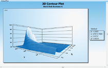
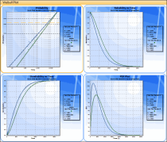

Windchill Weibull
formerly Relex Weibull
Windchill Weibull (formerly Relex Weibull) helps you analyze many different types of life data to discover failure trends and predict failure behavior using reliability growth analysis, Weibull analysis, and related distributions . Predict failure behavior, track reliability growth or product degradation, optimize test planning, and perform warranty forecasting calculations using a friendly, intuitive interface.
 Comprehensive Life Data Analysis. Windchill Weibull supports all types of life data, including exact, censored (suspended), interval and free-form data, which may be entered as single data points or groups. Supporting all major distributions and estimation methods, Windchill Weibull calculates and plots a number of outputs including probability, PDF, reliability and unreliability, failure rate, and contour plots. Best fit distribution, competing failure modes and non-parametric life data analysis is also supported. Import data sets from external sources, or generate data sets from Windchill FRACAS and link analysis results back to Windchill Prediction or RBD.
 Advanced Utilities. Windchill Weibull supports a range of utilities and related functions to enhance your analyses. Complete Reliability Growth Analysis using the Duane and Crow/AMSAA methodologies. Use degradation data methodologies to estimate failure times from the rate of decline of parts or components. Perform warranty forecasting using sales and returns data. Perform test planning calculations given a desired reliability level, time frame, or number of units. Windchill Weibull also includes a General Statisics Calculator that provides a wide range of useful statistical functions.
Professional Outputs. Windchill Weibull is supplied with a range of industry standard reports and graphs, including multiple data sets. Easy-to-use Report and Graph Wizards provide complete user customization of outputs to fit your specific needs, without the need for IT experts. Once complete, reports and graphs can be printed or saved directly to Microsoft Word or Excel, and Adobe PDF.
Weibull Data Sheet
6512_Windchill_Weibull_DS_EN.pdf
Adobe Acrobat document [246.5 KB]